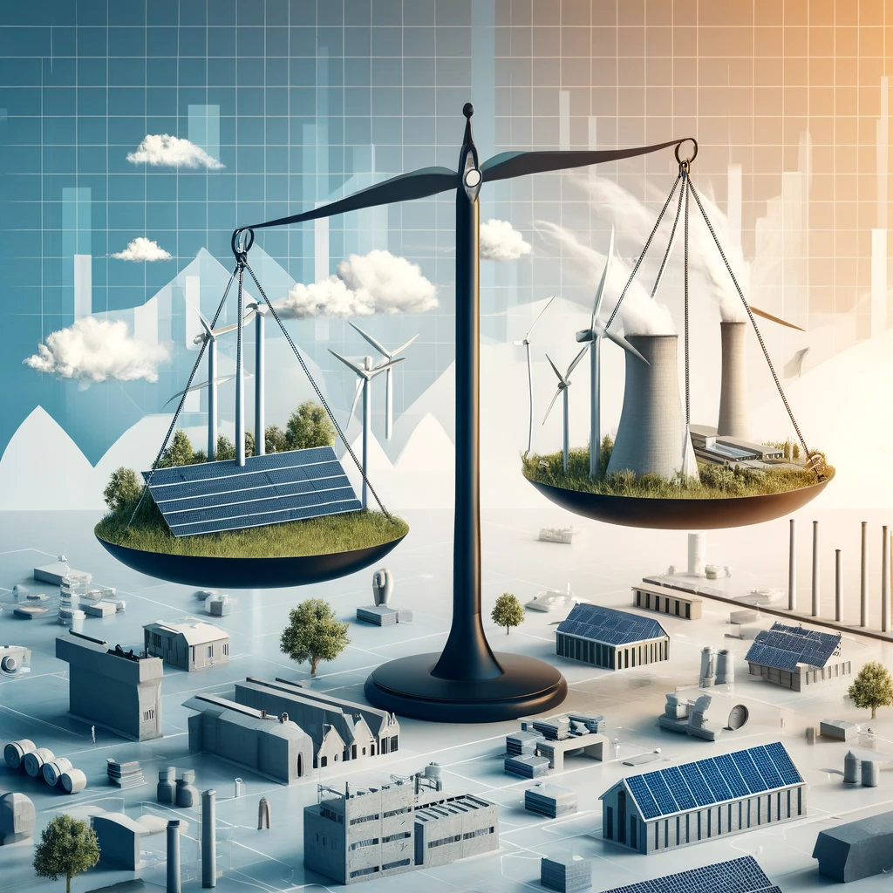
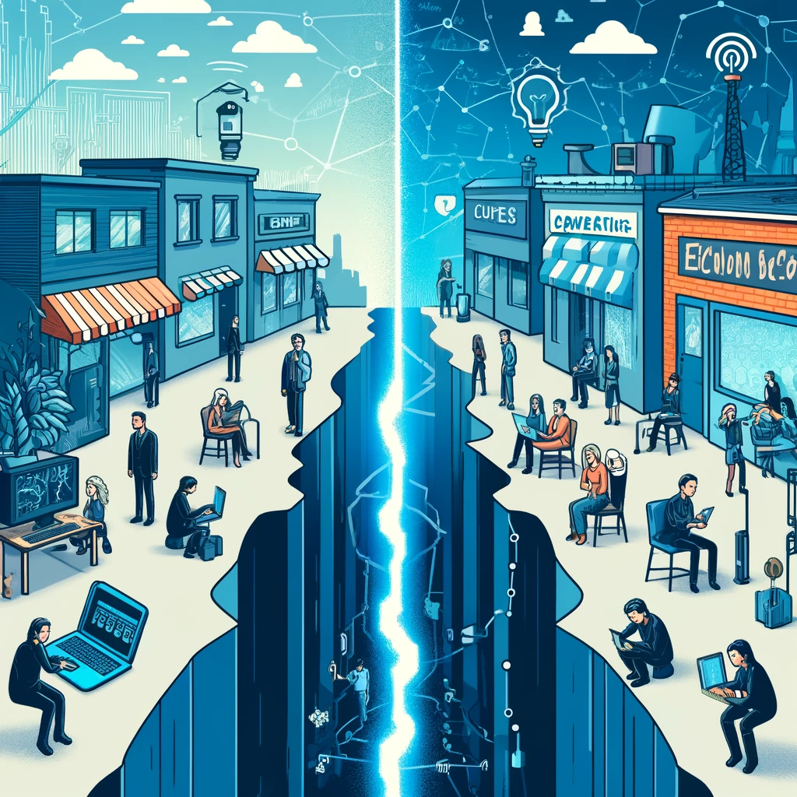

|
Zhaohan Li
I'm Zhaohan Li, a second-year Economics student at York University. Alongside my studies, I have a keen interest in exploring different cuisines, which provides a delightful escape from the rigors of academia. This passion for food allows me to unwind and explore various cultures through their culinary traditions.
Email /
Github
|
|
Projects
In college, my project interests have gravitated towards understanding the complex interplay between economic policies and societal outcomes. I'm particularly drawn to analyzing the transformative potential of renewable energy investments in driving sustainable economic growth and dissecting the intricate dynamics of how internet access disparities can shape economic opportunities across different communities. These areas not only align with my academic pursuits in economics but also reflect my commitment to exploring solutions for pressing global issues.
|
|
|
The Ripple Effect: Analyzing the Economic Impact of Local Businesses on Community Development
2022
This project explores how local businesses contribute to the economic vitality of their communities. By examining factors such as job creation, local spending, and community engagement, the study aims to shed light on the broader economic and social benefits that local enterprises bring to their neighborhoods.
|
|

|
Green Economics: Evaluating the Cost-Effectiveness of Renewable Energy Investments
2023
Focused on the intersection of economics and environmental sustainability, this project assesses the financial viability of renewable energy sources compared to traditional fossil fuels. Through cost-benefit analyses and long-term economic forecasts, the research seeks to understand the economic incentives and potential barriers to adopting green energy solutions. |
|

|
The Digital Divide: Economic Implications of Internet Access Inequality
2023
This project investigates how disparities in internet access affect economic opportunities and outcomes for different communities. By analyzing data on internet availability, educational achievement, and income levels across various regions, the study aims to highlight the economic consequences of the digital divide and propose policy solutions to address this issue.
|
|
{kind=link}